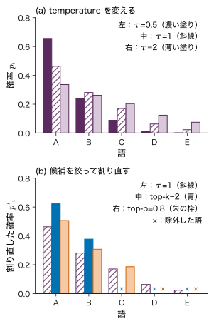
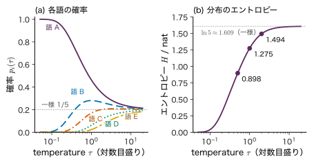
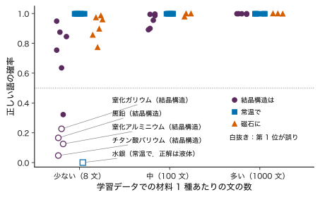

第26章GPT はどのように学び，文章を生成するか
- GPT は文章をどうやって書いているのか．「次の 1 語の確率」を求めることと，まとまった文章を書くことは，どうつながるのか．
- 「水銀は常温で固体である」のように，文法は正しいのに内容が誤った文を，なぜ高い確率で書くことがあるのか．
- 同じ質問をしても答えが毎回少しずつ違うのはなぜか．会話の中で教えたことを，モデルは覚えて学習しているのか．
「金属の例には」と書いた後に続く語として，鉄・銅・アルミニウムはどれもありそうだが，「ガラス」や「である」は続きそうにない．私たちは文の続きについて，無意識に「どの語がどれくらい来そうか」を見積もっている．GPT がしていることは，この見積もりを確率として数値で出し，その確率に従って 1 語を選び，選んだ語を文の最後に足してもう一度見積もる，という操作の繰り返しである．この教材のために学習した小さなモデル（パラメーター 28,384 個）に「金属 の 例 に は」を入れると，次の語の確率は 鉄 0.321，銅 0.288，アルミニウム 0.267 と出る．ところが同じモデルに「水銀 は 常温 で」を入れると，「固体」に 0.998 という高い確率を置く．水銀は常温で液体であるにもかかわらず，である．
本章では，前の 2 章で組み立てた Transformer（第24章，第25章）を，文章の確率モデルとして学習し，使う仕組みを説明する．文章を整数の列に直すトークン化，文章全体の確率を「次の 1 トークンの確率」の積に分ける自己回帰分解，それを学習の目的にした次トークン予測と perplexity，学習のときと生成のときの違い，greedy・temperature・top-k・top-p による次のトークンの選び方，文脈を与えることと重みを更新することの違い，指示調整と選好に基づく調整を順に扱う．最後に，もっともらしい誤りが出る理由と，生成確率と正しさの区別を，小さなモデルの実際の出力で確かめる．
- Generative・Pre-trained・Transformer の 3 語がそれぞれ何を指すかを説明できる．
- バイト対符号化（BPE）の併合を短い文字列で手計算し，トークンが単語と一致しない理由を説明できる．
- 自己回帰分解を乗法定理から導き，文の確率を条件付き確率の積として計算できる．
- 次トークン予測の損失が交差エントロピー（データの分布との KL ダイバージェンスと定数の和）であることを導き，perplexity を計算して意味を説明できる．
- 学習時と生成時で，重み・入力・計算の進め方・乱数の使い方がどう違うかを表にできる．
- greedy，temperature，top-k，top-p で次のトークンの分布がどう変わるかを手計算できる．
- 文脈を与えることと重みを更新することを区別し，指示調整と選好に基づく調整の位置づけを説明できる．
- もっともらしい誤りが出る理由を 4 つ挙げ，生成確率が高いことと内容が正しいことが別であることを例で示せる．
入門ルートで読む節：26.1，26.2，26.3，26.4，26.5，26.6，26.7，26.9，26.10，26.14．「詳しいルート」の印が付いた節は，初めて読むときは飛ばしてよい．
記号：この章の約束
第24・25章と同じく，系列を行に並べた行列で書く（$\bm{X}\in\R^{T\times d_{\mathrm{model}}}$ の第 $t$ 行が位置 $t$ のベクトル．線形変換は右から掛ける）．トークンは整数の ID で，列を $x_1,x_2,\dots,x_T$，位置 $t$ より前を $x_{\lt t}=(x_1,\dots,x_{t-1})$，位置 $t$ までを $x_{\le t}$ と書く．語彙の大きさは $V_{\mathrm{voc}}$（Value 行列 $\bm{V}$ と区別するため添字を付ける），語彙の中の番号は $i,j$ で表す．位置 $t$ の出力 $\bm{o}_t\in\R^{V_{\mathrm{voc}}}$ をロジット（logit．softmax にかける前の点数）という．モデルのパラメーターはまとめて $\bm{\theta}$ と書く．生成のときの temperature は $\tau$ と書き，物理の温度 $T$・系列長 $T$ と区別する．本章の損失は，第14・15章と同じく平均で書く（第8・9章は和で書いた）．
26.1 Generative・Pre-trained・Transformer — 3 語の意味
26.1.1 何をしているのか — 1 トークンずつ足していく
GPT は Generative Pre-trained Transformer の頭文字である．3 語の意味を，生成の様子（図26.1）とともに確かめておく．
- Generative（生成的）：文章の確率分布 $p(x_{1:T})$ そのものをモデルにし，そこから新しい列をサンプリング（確率に従って引くこと）できる．「入力 → ラベル」だけを出す分類器とは違う．
- Pre-trained（事前学習した）：特定の仕事のラベルを使わず，大量の文章から「次のトークンを当てる」課題で先に学習しておく．正解は文章そのものの中にあるので，人がラベルを付ける必要がない（自己教師あり学習．第1章 1.3）．こうして得た重みを出発点として，後から別の目的に合わせて調整する（ファインチューニング．26.8 節）．
- Transformer：第25章の Transformer のうち，causal mask を付けた decoder の部分だけを積み重ねた型（第25章 25.7）．位置 $t$ の出力 $\bm{o}_t$ が次のトークン $x_{t+1}$ の分布を与える．
生成は「文脈を入れる → 最後の位置のロジットを得る → 確率にして 1 つ選ぶ → 文脈に足す」の繰り返しである．このように，自分が出した値を次の入力にして 1 つずつ先へ進む方式を自己回帰（autoregressive）という．
26.1.2 この章で扱う 3 種類の「モデル」を区別する
本章では，性質のまったく違う 3 つのものを扱う．混同しないよう，最初に区別しておく（表26.1）．
| 重みの決め方 | 規模 | 本章での役割 | |
|---|---|---|---|
| (1) 手で決めた数値の例 | 人が値を決める（学習しない） | 語彙 5 語など | 式の手計算（例題・表26.4） |
| (2) この教材のために学習した小規模なモデル（シミュレーター S10 の②） | 教育用の合成コーパスで学習 | 2 層・2 ヘッド・$d_{\mathrm{model}}=32$，語彙 67 語，パラメーター 28,384 個 | 実際の出力で現象を確かめる（26.6 節，26.9 節） |
| (3) 実際の GPT | 大量の実在の文章で学習し，調整したもの | 公開された論文で 1 億〜1750 億個（26.11 節）．その後の製品の多くは非公開 | 公開された論文に書かれた範囲だけを述べる |
(2) は GPT と同じ型（decoder のみの Transformer）の小さなモデルであって，GPT ではない．(2) で観察した誤りの割合などの数値は，(3) にそのまま当てはまらない．ただし，誤りが生じる仕組み（26.9 節）は型と目的関数に由来するので，(2) でも (3) でも同じ形で現れうる．
例題26.1 文章の確率を表で持てない理由
(1) 語彙が 67 語のとき，長さ 5 のトークン列は何通りあるか．(2) 語彙 $V_{\mathrm{voc}}=50257$，長さ $T=1024$ のトークン列の数は 10 進法で何桁か．(3) この結果から，文章の確率分布 $p(x_{1:T})$ を「すべての列の確率の表」として持つことができない理由を述べよ．
解答 (1) 各位置に 67 通りの語が入れるので，$67^{5}$ $=67\times67\times67\times67\times67$ $=1{,}350{,}125{,}107$ 通り（約 $1.35\times10^{9}$）．
(2) 列の数は $50257^{1024}$ である．桁数は常用対数で数える．
$$ \begin{aligned} \log_{10}\bigl(50257^{1024}\bigr)&=1024\times\log_{10}50257\\ &=1024\times4.70120\approx4814.0 \end{aligned} $$$10^{4814.0}$ 程度の数なので，4815 桁である．
(3) 列の数があまりに多く，表の欄を用意することも，学習データから各欄の頻度を数えることもできない．そこで，26.3 節で列の確率を「次の 1 トークンの条件付き確率」の積に分け，その条件付き確率を，すべての文脈で共通の重みを持つ 1 つのネットワークで計算する．
26.2 トークン化 — 文章を整数の列にする
26.2.1 文字・単語・サブワード
ニューラルネットワークは数値しか扱えないので，文章をまずトークン（token）と呼ぶ単位の列に切り，各トークンに整数の番号（トークン ID）を付ける．使うトークンの一覧が語彙（vocabulary）で，その大きさが $V_{\mathrm{voc}}$ である．トークン ID は，埋め込み行列 $\bm{W}_E\in\R^{V_{\mathrm{voc}}\times d_{\mathrm{model}}}$ の何行目を取り出すかを指す番号として使われる（第23章 23.1，第25章 25.2）．
切り方には大きく 3 通りある．
- 文字単位：語彙は小さい（英字なら数十，日本語でも数千）が，列が長くなる．文脈長 $T_{\max}$ が同じなら，見渡せる文章が短くなる．
- 単語単位：列は短いが，語彙が巨大になり，学習データに無い語（新しい化合物名など）を扱えない．
- サブワード単位：よく出る文字のまとまりは 1 トークンにし，まれな語は短い断片の組み合わせで表す．語彙の大きさと列の長さの折り合いをつける方法で，GPT はこの方式を使う．
シミュレーター S10 の小規模なモデルは，説明を簡単にするため単語単位（空白で区切った 67 語）を使っている．実際の GPT はサブワードを使い，GPT-2 の語彙は 50,257 個である（26.11 節）．
26.2.2 バイト対符号化（BPE）
サブワードの語彙を作る代表的な方法がバイト対符号化（byte pair encoding，BPE）である．もとはデータ圧縮のために提案された算法（Gage 1994）で，Sennrich, Haddow & Birch (2016) が翻訳の語彙作りに使った．手順は次のとおりである．
定義26.1 BPE の語彙の学習
- 学習用の文章を単語に分け，単語ごとの出現回数を数える．各単語を 1 文字ずつの記号の列にし，語の終わりを表す記号「_」を最後に付ける．初めの語彙は，現れる文字と「_」の全体である．
- すべての単語の中で，隣り合う 2 つの記号の組の出現回数を，単語の出現回数で重みを付けて数える．
- 最も多い組を 1 つの新しい記号に併合し，語彙に加える．すべての単語の中のその組を新しい記号で置き換える．
- 2〜3 を決めた回数（または語彙が決めた大きさになるまで）繰り返す．併合の規則を，行った順に記録しておく．
新しい文章をトークンに切るときは，文字に分けた後，記録した併合の規則を学習したときと同じ順に当てはめる．
例題26.2 4 回の併合を手で追う
学習用の文章に，単語 oxide が 1 回，ion が 4 回，ions が 1 回，oxygen が 2 回現れた（説明のために作った例）．BPE の併合を 4 回行い，各回で併合する組と，4 回の後の各単語の切り方を求めよ．同点の組は無いものとする．
解答 初めの記号列は o x i d e _（1 回），i o n _（4 回），i o n s _（1 回），o x y g e n _（2 回）である．隣り合う組の回数を数える．
- 1 回目：(n, _) は ion の 4 回と oxygen の 2 回で $4+2=6$．(i, o) は ion の 4 回と ions の 1 回で $5$，(o, n) も $5$，(o, x) は oxide の 1 回と oxygen の 2 回で $3$．最大の (n, _) を併合して「n_」を作る．ion は i o n_，oxygen は o x y g e n_ になる．
- 2 回目：(i, o) は ion と ions で $4+1=5$．(o, n) は「n_」ができたので ions の 1 回だけになり $1$．(o, n_) は ion の $4$，(o, x) は $3$．最大の (i, o) を併合して「io」を作る．
- 3 回目：(io, n_) は ion の $4$，(o, x) は $3$，(x, y) などは $2$．(io, n_) を併合して「ion_」を作る．ion は 1 個の記号 ion_ になる．
- 4 回目：残る組の最大は (o, x) の $1+2=3$．併合して「ox」を作る．
4 回の後の切り方は 表26.2 と 図26.2 のとおりで，全体のトークンの数は $6\times1+4\times4+5\times1+7\times2=41$ 個から $5\times1+1\times4+4\times1+5\times2=23$ 個に減った．語彙は初めの 10 記号（o, x, i, d, e, n, s, y, g, _）に 4 個を加えた 14 個である．
| 回 | 併合した組（回数） | 次点の組（回数） | ion（×4） | ions（×1） | oxygen（×2） |
|---|---|---|---|---|---|
| 0 | — | — | i o n _ | i o n s _ | o x y g e n _ |
| 1 | (n, _)（6） | (i, o)，(o, n)（5） | i o n_ | i o n s _ | o x y g e n_ |
| 2 | (i, o)（5） | (o, n_)（4） | io n_ | io n s _ | o x y g e n_ |
| 3 | (io, n_)（4） | (o, x)（3） | ion_ | io n s _ | o x y g e n_ |
| 4 | (o, x)（3） | (x, y) など（2） | ion_ | io n s _ | ox y g e n_ |
26.2.3 トークンは単語と一致しない
例題26.2 の結果から，次のことが分かる．
- 出現回数の多い語（ion）は 1 トークンにまとまり，少ない語（oxide）は細かく切られる．何が 1 トークンになるかは，学習用の文章の統計で決まる．人が考える「意味の単位」とは限らない．
- 同じ文字列 ion でも，ion と ions では切り方が違う．したがって，モデルが「ion という語」を常に同じ 1 つの記号として見ているわけではない．
- 学習で見たことのない語（たとえば dioxide）も，o, x, i, d, e などの断片に切れば必ず表せる．GPT-2 は文字の代わりにバイト（UTF-8 の 1 バイト）を最小の記号にし，どんな文字列も語彙の外に出ないようにしている（Radford et al. 2019）．
この性質は，数値や化学式の扱いに影響する．たとえば「1300」が 1 トークンになるか「13」と「00」に分かれるかは語彙しだいで，モデルは桁の並びを人と同じ単位で見ているとは限らない．文章の長さや費用をトークンの数で数えるとき，トークンの数は文字の数とも単語の数とも一致しない．
なぜ BPE は「よく出る組から」併合するのか
組を 1 記号にすると，その組が現れるたびに記号が 1 個減る（例題26.2 の 1 回目は 41 → 35）．毎回「最も多くの記号を減らす併合」を選ぶ欲張りな圧縮で，限られた語彙で文章を短く表せる．ただし，全体として最適な語彙を保証するものではない．
26.3 自己回帰分解 — 文章の確率を次の 1 トークンの積にする
26.3.1 乗法定理を繰り返す
例題26.1 で見たように，列全体の確率の表は持てない．そこで，第2章の乗法定理 $p(a,b)=p(a)\,p(b\mid a)$（第2章 2.2）を繰り返して，列の確率を分解する．$T=3$ で 1 行ずつ書く．
$$ \begin{aligned} p(x_1,x_2,x_3)&=p(x_1,x_2)\,p(x_3\mid x_1,x_2)\\ &=p(x_1)\,p(x_2\mid x_1)\,p(x_3\mid x_1,x_2) . \end{aligned} $$1 行目は $a=(x_1,x_2)$，$b=x_3$ とした乗法定理，2 行目は $p(x_1,x_2)$ にもう一度乗法定理を使った．同じことを $T$ 個まで続けると，次の分解を得る．
$t=1$ の因子は条件の無い $p(x_1)$ である．この式は近似ではなく恒等式で，どんな分布にも成り立つ．Markov 性（直前のいくつかだけに依存する，という仮定．第22章 22.2）を置いていない点が，n-gram モデルとの違いである．
26.3.2 モデルは右辺の因子を 1 つのネットワークで与える
GPT は，式 \eqref{eq:26-ar} の右辺の各因子を，1 つのネットワークで計算する．実際には列の先頭に，文の始まりを表す特別なトークン <bos> を置き，$x_1=$ <bos> とする（シミュレーター S10 も同じ．画面の位置の番号も 1 から数える）．文の終わりには <eos> を置く．位置 $t$ までの文脈 $x_{\le t}$ を入れたとき，位置 $t$ のロジット $\bm{o}_t\in\R^{V_{\mathrm{voc}}}$ から，次のトークンが語彙の $i$ 番目である確率を
\begin{equation} \begin{aligned} &p_{\bm{\theta}}(x_{t+1}=i\mid x_{\le t})\\ &=\softmax(\bm{o}_t)_i\\ &=\frac{\exp(o_{t,i})}{\sum_{j=1}^{V_{\mathrm{voc}}}\exp(o_{t,j})} \end{aligned} \label{eq:26-cond} \end{equation}と計算する（$o_{t,i}$ は $\bm{o}_t$ の第 $i$ 成分）．行に並べた書き方では，最後の層の出力を $\bm{H}\in\R^{T\times d_{\mathrm{model}}}$ として，全位置のロジットを $\bm{O}=\bm{H}\bm{W}_U\in\R^{T\times V_{\mathrm{voc}}}$ と 1 回の行列積で得る（$\bm{W}_U\in\R^{d_{\mathrm{model}}\times V_{\mathrm{voc}}}$．第25章 25.7）．$\bm{O}$ の第 $t$ 行が $\bm{o}_t^{\tp}$ である．
ここで大事なのは，文脈の長さ $t$ がいくつでも，同じ重み $\bm{\theta}$ で条件付き確率を出すことである．表と違い，ネットワークは「似た文脈には似た分布を出す」ように文脈どうしで情報を共有する．語を埋め込みベクトルで表すニューラルネットワークの言語モデルが n-gram モデルより良く予測できることは，Bengio et al. (2003) が示した．情報の共有は汎化の源であると同時に，26.9 節で見る誤りの源でもある．
例題26.3 条件付き確率の積で文の確率を求める
あるモデルが，<bos> の後に次の条件付き確率を出した（説明のために決めた値）．
$p(\text{鉄}\mid\langle\text{bos}\rangle)=0.5$，$p(\text{は}\mid\langle\text{bos}\rangle\,\text{鉄})=0.8$，$p(\text{金属}\mid\langle\text{bos}\rangle\,\text{鉄 は})=0.7$，$p(\langle\text{eos}\rangle\mid\langle\text{bos}\rangle\,\text{鉄 は 金属})=0.9$．
(1) <bos> の後に「鉄 は 金属 <eos>」が続く確率を求めよ．(2) その対数を求めよ．(3) 「直前の 1 語だけを見る」bigram モデルでは，3 つ目の因子はどう書き換わるか．
解答 (1) 式 \eqref{eq:26-ar} より，$x_1=\langle\text{bos}\rangle$ を条件にして
$$ \begin{aligned} &p(\text{鉄 は 金属 }\langle\text{eos}\rangle\mid\langle\text{bos}\rangle)\\ &=0.5\times0.8\times0.7\times0.9=0.252 . \end{aligned} $$(2) 積の対数は対数の和である．
$$ \begin{aligned} \ln 0.252&=\ln0.5+\ln0.8+\ln0.7+\ln0.9\\ &=-0.6931-0.2231\\ &\quad-0.3567-0.1054\\ &=-1.3783 . \end{aligned} $$長い列では確率の積は極めて小さくなり，計算機で 0 に丸められてしまう（アンダーフロー）．そのため，実際には対数の和で計算する．
(3) bigram モデルは $p(\text{金属}\mid\langle\text{bos}\rangle\,\text{鉄 は})$ を $p(\text{金属}\mid\text{は})$ で置き換える．「は」の後に何が来やすいかは，前にある材料名に関係なく同じ値になる．S10 の画面の「比較：bigram モデル」で，「金属 の 例 に は」の後に bigram が材料名を出せない（直前が「は」なので，金属 0.180，電気 0.107 などを出す）のはこのためである．
26.4 学習 — 次トークン予測と perplexity
26.4.1 損失：次のトークンの負の対数確率の平均
学習に使う 1 本の列を $x_1,x_2,\dots,x_{T+1}$（$x_1=$ <bos>）とする．位置 $t=1,\dots,T$ の出力に，それぞれ「次のトークン $x_{t+1}$」を当てさせる．式 \eqref{eq:26-ar} の対数尤度を位置の数 $T$ で割り，符号を変えたものを損失にする．
単位は「nat/トークン」である．学習データが多数の列からなるときは，すべての列の全位置について平均する（ミニバッチではミニバッチの中で平均する．第15章 15.5）．これを次トークン予測（next-token prediction）という．正解のトークン $x_{t+1}$ を one-hot ベクトル $\bm{y}_t\in\{0,1\}^{V_{\mathrm{voc}}}$ で表せば，各位置の項 $-\ln p_{\bm{\theta}}(x_{t+1}\mid x_{\le t})=-\sum_{i}y_{t,i}\ln\softmax(\bm{o}_t)_i$ は，第9章 9.5 節の多クラス分類の交差エントロピーそのものである．GPT の学習は，「語彙の数 $V_{\mathrm{voc}}$ 個のクラスへの分類」を全位置で同時に行うことだと言える．
26.4.2 損失を小さくすることはデータの分布に近づくこと
ある文脈 $c=x_{\le t}$ の後に次のトークンが現れる本当の分布を $p_{\mathrm{data}}(\cdot\mid c)$，モデルの分布を $q(\cdot\mid c)=p_{\bm{\theta}}(\cdot\mid c)$ と書く．データの中で文脈 $c$ の後に続くトークンについて損失を平均すると，大数の法則により，次の期待値に近づく．
導出：期待損失＝エントロピー＋KL
式を短くするため，この導出の中だけ $p(v)=p_{\mathrm{data}}(v\mid c)$，$q(v)=q(v\mid c)$ と書く．期待値の定義（$\Ex$ はトークン $v$ を $p(v)$ に従って引いたときの平均）から書き始め，対数の中に $p(v)/p(v)=1$ を掛ける．
$$ \begin{aligned} \Ex\bigl[-\ln q(v)\bigr]&=-\sum_{v}p(v)\ln q(v)\\ &=-\sum_{v}p(v)\ln\Bigl[p(v)\cdot\frac{q(v)}{p(v)}\Bigr]\\ &=-\sum_{v}p(v)\ln p(v)\\ &\quad+\sum_{v}p(v)\ln\frac{p(v)}{q(v)} . \end{aligned} $$3 行目は第 1 項がエントロピー $H[p_{\mathrm{data}}]$，4 行目は KL ダイバージェンス（第5章 5.4）である．
（導出終わり）
左辺は交差エントロピー（期待損失）である．右辺の第 1 項はデータだけで決まり $\bm{\theta}$ によらない．したがって，損失を小さくすることは，各文脈でモデルの分布をデータの分布に KL の意味で近づけることと同じである（第5章 5.5 節の「交差エントロピー損失の正体」の系列版）．KL $\ge0$ なので，期待損失は $H[p_{\mathrm{data}}]$ より小さくならない．文章には本質的なゆらぎ（同じ文脈の後に何通りもの続きがありうる）があるので，損失は 0 にならないのがふつうである．
この結果は 26.9 節で重要になる．損失が測っているのは「学習データで次に来やすいトークンをどれだけ当てたか」であって，文の内容が正しいかどうかは損失のどこにも入っていない．
26.4.3 正解の系列を入れて，全位置を 1 回で計算する
学習のときは，モデルが自分で生成した列ではなく，学習データの正解の列を入力にする（teacher forcing）．入力は $x_1,\dots,x_T$，正解は 1 つずらした $x_2,\dots,x_{T+1}$ である（図26.3）．
もし causal mask が無ければ，位置 $t$ の出力は Attention を通して正解 $x_{t+1}$ そのものを見ることができ，損失は小さくなるが何も学ばない．mask は「位置 $t$ の出力は $x_{\le t}$ だけの関数である」ことを保証して式 \eqref{eq:26-cond} の意味を守り，そのうえで長さ $T$ の列 1 本から $T$ 個の分類問題を 1 回の順伝播で得る．位置を 1 つずつ順に計算する RNN（第23章 23.3）と対照的である．
26.4.4 勾配は「確率 − 正解」
位置 $t$ の項 $\ell_t=-\ln\softmax(\bm{o}_t)_{x_{t+1}}$ の，ロジットについての勾配は，第9章 9.5 節と同じく
\begin{equation} \begin{aligned} &\pdiff{\ell_t}{\bm{o}_t}=\bm{p}_t-\bm{y}_t,\\ &\bm{p}_t=\softmax(\bm{o}_t)\in\R^{V_{\mathrm{voc}}} \end{aligned} \label{eq:26-grad} \end{equation}である（$\bm{y}_t$ は正解の one-hot ベクトル）．正解の語の成分は $p_{t,x_{t+1}}-1\le0$，それ以外は $p_{t,i}\ge0$ なので，勾配降下法の 1 歩は正解の語のロジットを上げ，ほかの語のロジットを確率に比例して下げる．この勾配が逆伝播（第15章 15.2）で埋め込み・Attention・FFN のすべての重みに配られる．損失 $L$ は $T$ 個の平均なので，$\partial L/\partial\bm{o}_t=(\bm{p}_t-\bm{y}_t)/T$ である．
26.4.5 perplexity — 一様に迷っている選択肢の数
定義26.2 perplexity
列の各位置の負の対数確率の平均を $L$（式 \eqref{eq:26-loss}）とするとき，
\begin{equation} \begin{aligned} \mathrm{PPL}&=\exp(L)\\ &=\Bigl(\prod_{t=1}^{T}p_t\Bigr)^{-1/T} \end{aligned} \label{eq:26-ppl} \end{equation}を perplexity（困惑度）という．ここで $p_t=p_{\bm{\theta}}(x_{t+1}\mid x_{\le t})$ は位置 $t$ の正解の確率である．2 つ目の等号は $\exp\bigl(-\frac1T\sum_t\ln p_t\bigr)=\bigl(\prod_tp_t\bigr)^{-1/T}$ による．正解の確率の幾何平均の逆数である．
意味を見るため，モデルが毎回 $K$ 個の選択肢に一様に迷っている（正解に確率 $1/K$ を置く）とする．このとき $L=-\ln(1/K)=\ln K$ なので $\mathrm{PPL}=K$ である．すなわち perplexity は「モデルが平均して何個の選択肢の間で一様に迷っているのと同じだけ困っているか」を表す．値が小さいほど良く，最小は 1（いつも正解に確率 1）である．
- 語彙 $V_{\mathrm{voc}}$ 個から一様に選ぶモデルは $\mathrm{PPL}=V_{\mathrm{voc}}$．S10 の語彙なら 67，損失は $\ln67\approx4.205$ nat/トークンである．学習を始めた直後の損失がこの程度になるのは，初期の重みではロジットがほぼ等しく，分布がほぼ一様だからである．
- S10 の小規模なモデルは，検証データ（学習に使っていない文）で損失 0.501 nat/トークン，$\mathrm{PPL}=e^{0.501}\approx1.65$ である（画面の「このモデルの説明」）．直前の 1 トークンだけを見る bigram モデルは 2.52 で，文脈全体を見る効果が数値に表れている．
perplexity は同じトークン化どうしでしか比べられない．トークンの切り方が違えば，1 トークンあたりの情報量が違うからである．
例題26.4 損失・perplexity・勾配
(1) 例題26.3 の 4 つの条件付き確率 0.5，0.8，0.7，0.9 を正解に置いたとき，式 \eqref{eq:26-loss} の損失 $L$ と perplexity を求めよ．(2) 語彙を 3 語とし，ある位置のロジットが $\bm{o}=(1,\,0,\,-1)$，正解が 2 番目の語であった．確率 $\bm{p}$，その位置の損失 $\ell$，勾配 $\partial\ell/\partial\bm{o}$ を求めよ．
解答 (1) 例題26.3 (2) より対数の和は $-1.3783$ で，$T=4$ なので
$$ \begin{aligned} L&=-\frac{-1.3783}{4}=0.3446\ \text{nat/トークン},\\ \mathrm{PPL}&=e^{0.3446}=1.411 . \end{aligned} $$確かめとして，幾何平均の逆数 $(0.252)^{-1/4}=1.411$ と一致する．平均して約 1.41 個の選択肢の間で迷っているのと同じである．
(2) $e^{1}=2.7183$，$e^{0}=1$，$e^{-1}=0.3679$ で，和は $4.0862$．
$$ \begin{aligned} \bm{p}&=\Bigl(\frac{2.7183}{4.0862},\ \frac{1}{4.0862},\ \frac{0.3679}{4.0862}\Bigr)\\ &=(0.6652,\ 0.2447,\ 0.0900) . \end{aligned} $$損失は $\ell=-\ln0.2447=1.4076$．勾配は式 \eqref{eq:26-grad} より
$$ \begin{aligned} \bm{p}-\bm{y}&=(0.6652,\,0.2447-1,\,0.0900)\\ &=(0.6652,\,-0.7553,\,0.0900) . \end{aligned} $$勾配降下法は $\bm{o}\leftarrow\bm{o}-\eta(\bm{p}-\bm{y})$ なので，正解の 2 番目のロジットを上げ，最も確率の大きい 1 番目のロジットを最も強く下げる．
26.5 学習時と生成時の違い
同じネットワークでも，学習するときと文章を生成するときでは，使い方がまったく違う（表26.3）．
| 学習時 | 生成時 | |
|---|---|---|
| 重み $\bm{\theta}$ | 勾配で更新する | 固定（1 つも変えない） |
| 入力 | 学習データの正解の列（teacher forcing） | 与えた文脈に，自分が選んだトークンを足していく |
| 計算の進め方 | 全位置を 1 回の順伝播で並列に | 1 トークンずつ順に（次の入力が前の出力で決まる） |
| 使う出力 | 全位置の分布（正解の確率） | 最後の位置の分布だけ |
| 乱数 | 使わない（ミニバッチの選び方・初期値を除く） | サンプリングで使う（greedy なら使わない） |
| 目的 | 損失 $L$（式 \eqref{eq:26-loss}）を小さくする | 分布に従って続きを作る（損失は計算しない） |
生成時の入力が「自分の出力」である点は重要である．学習では常に正しい文脈が入力されたが，生成では一度選んだトークンが誤っていても，それが次の文脈になる．学習中に見たことのない（誤りを含む）文脈の上で予測を続けることになり，誤りが誤りを呼ぶことがある（26.9 節の理由 (4)）．
発展：KV キャッシュ
生成では，長さ $t$ の文脈で 1 回順伝播して $x_{t+1}$ を選び，次に長さ $t+1$ の文脈でまた順伝播する．causal mask があるので，位置 $1,\dots,t$ の各層の Key と Value（第24章 24.5）は，後ろにトークンを足しても変わらない．そこで，一度計算した各層の Key・Value を保存しておき，新しい位置の分だけ Query・Key・Value を計算して Attention を求めれば，結果を変えずに計算を減らせる．これを KV キャッシュという．代わりに，保存のためのメモリーが文脈の長さ・層数・次元に比例して必要になる．
例題26.5 生成に要する計算を数える
長さ 3 のプロンプト（モデルに与える文脈）から，5 トークンを生成する．(1) KV キャッシュを使わず，毎回文脈全体を順伝播し直すとき，順伝播で処理する位置の数の合計はいくつか．(2) KV キャッシュを使うとどうなるか．
解答 5 個目のトークンは長さ 7 の文脈から選ぶので，順伝播の文脈の長さは 3，4，5，6，7 である．
(1) $3+4+5+6+7=25$ 位置．
(2) 最初にプロンプトの 3 位置を計算し，その後は新しい 1 位置ずつを 4 回計算するので $3+1+1+1+1=7$ 位置．
Attention のスコアの数で比べると，文脈の長さを $n$ として，キャッシュなしは $\sum_{n=3}^{7}n(n+1)/2=80$ 個，キャッシュありは $6+4+5+6+7=28$ 個である．文脈が長いほど差は大きくなる．
26.6 次のトークンの選び方 — greedy・temperature・top-k・top-p
26.6.1 4 つの方法
最後の位置のロジット $\bm{o}=(o_1,\dots,o_{V_{\mathrm{voc}}})$（添字の $t$ は省く）から，次のトークンを 1 つ選ぶ方法を定義する．
定義26.3 次のトークンの選び方
- greedy（貪欲法）：最大のロジットの語 $\argmax_i o_i$ を選ぶ．乱数を使わず，同じ文脈からは常に同じ語が出る．
- temperature $\tau\gt0$：ロジットを $\tau$ で割ってから softmax をとった分布からサンプリングする． \begin{equation} \begin{aligned} &p_i(\tau)\\ &=\frac{\exp(o_i/\tau)}{\sum_{j=1}^{V_{\mathrm{voc}}}\exp(o_j/\tau)} \end{aligned} \label{eq:26-temp} \end{equation}
- top-k：確率の大きい順に $k$ 個の語だけを残し，残った語の確率を和が 1 になるよう割り直してからサンプリングする．
- top-p（nucleus sampling）：確率の大きい順に足していき，累積が初めて $p$ 以上になった語までを残し，割り直してからサンプリングする（Holtzman et al. 2020）．残る語の数は分布の形で変わる．
残した語の集合を $S$ とすると，割り直した確率は
\begin{equation} \begin{aligned} p'_i&=\frac{p_i(\tau)}{\sum_{j\in S}p_j(\tau)}\\ &\qquad(i\in S),\\ p'_i&=0\quad(i\notin S) \end{aligned} \label{eq:26-renorm} \end{equation}である．S10 の装置は，(1) $\tau$ で割る，(2) softmax，(3) top-k，(4) (3) で割り直した確率で top-p，(5) 割り直す，の順に行う．
サンプリングは，一様乱数 $u\in[0,1)$ を 1 つ引き，残った語を確率の大きい順に並べて確率を足していき，初めて累積が $u$ を超えた語を選ぶ．
26.6.2 temperature の働き
式 \eqref{eq:26-temp} で 2 つの語の確率の比をとると，分母が消えて
\begin{equation} \frac{p_i(\tau)}{p_j(\tau)}=\exp\Bigl(\frac{o_i-o_j}{\tau}\Bigr) \label{eq:26-ratio} \end{equation}となる．$\tau=1$ のときの比を $r=e^{o_i-o_j}$ とすると，$\tau$ のときの比は $r^{1/\tau}$ である．$\tau=0.5$ なら比が 2 乗に広がって分布が鋭くなり，$\tau=2$ なら比が平方根に縮んで分布がなだらかになる．極限は次のとおりである．
導出：$\tau\to0$ と $\tau\to\infty$ の極限
式 \eqref{eq:26-temp} の分子と分母を $\exp(o_i/\tau)$ で割る．
$$ p_i(\tau)=\frac{1}{\sum_{j}\exp\bigl((o_j-o_i)/\tau\bigr)} . $$(a) $\tau\to+0$：$o_i$ がただ 1 つの最大値なら，$j\ne i$ では $o_j-o_i\lt0$ なので $(o_j-o_i)/\tau\to-\infty$，$\exp(\cdot)\to0$．分母は $j=i$ の項 $e^{0}=1$ だけが残り，$p_i\to1$．ほかの語は $p_j\to0$．つまり greedy と同じになる．
(b) $\tau\to\infty$：すべての $j$ で $(o_j-o_i)/\tau\to0$，$\exp(\cdot)\to1$ なので，分母は $V_{\mathrm{voc}}$ に近づき，$p_i\to1/V_{\mathrm{voc}}$．つまり一様分布になる．
（導出終わり）
また，すべてのロジットに同じ数 $c$ を足しても式 \eqref{eq:26-temp} は変わらない（分子と分母に共通の因子 $e^{c/\tau}$ が出て約分される）．ロジットの絶対値には意味がなく，差だけが意味を持つ．計算では最大値を引いてから exp をとり，桁あふれを防ぐ（S10 もそうしている）．
式 \eqref{eq:26-temp} は，統計力学の Boltzmann 分布 $p_i\propto\exp(-E_i/k_{\mathrm B}T)$ と同じ形をしている（$-o_i$ をエネルギー，$\tau$ を $k_{\mathrm B}T$ と見る）．そのため「temperature」と呼ぶ．しかしロジットは物理的なエネルギーではなく，$\tau$ は熱浴の温度でもない．形が同じことと物理的に同じことの違いは，第27章 27.6で詳しく扱う．
26.6.3 5 語のロジットで手計算する
例題26.6 4 通りの分布
語彙を 5 語 A，B，C，D，E とし，ロジットを $\bm{o}=(2.0,\,1.5,\,1.0,\,0.0,\,-1.0)$ とする（手で決めた値）．次の分布を求めよ．(1) $\tau=1$．(2) $\tau=0.5$．(3) $\tau=1$，top-k $=2$．(4) $\tau=1$，top-p $=0.8$．(5) greedy で選ばれる語．
解答 (1) $e^{2.0}=7.389$，$e^{1.5}=4.482$，$e^{1.0}=2.718$，$e^{0}=1$，$e^{-1.0}=0.368$．和は $15.957$ なので
$$ \begin{aligned} \bm{p}(1)=(&0.4631,\ 0.2809,\ 0.1704,\\ &0.0627,\ 0.0231) . \end{aligned} $$(2) ロジットを 0.5 で割ると $(4,\,3,\,2,\,0,\,-2)$．$e^{4}=54.60$，$e^{3}=20.09$，$e^{2}=7.389$，$e^{0}=1$，$e^{-2}=0.1353$，和 $83.21$ なので
$$ \begin{aligned} \bm{p}(0.5)=(&0.6562,\ 0.2414,\ 0.0888,\\ &0.0120,\ 0.0016) . \end{aligned} $$A と B の比は $\tau=1$ で $0.4631/0.2809=1.649=e^{0.5}$，$\tau=0.5$ で $0.6562/0.2414=2.718=e^{1}=1.649^{2}$ となり，式 \eqref{eq:26-ratio} のとおり 2 乗になっている．
(3) 大きい順の 2 語 A，B を残す．$p_A+p_B=0.7439$（丸める前の値の和）で割り直して $p'_A=0.4631/0.7439=0.6225$，$p'_B=0.3775$，ほかは 0．
(4) 大きい順に累積をとる：A まで $0.4631$，B まで $0.7439$（$\lt0.8$），C まで $0.9143$（$\ge0.8$）．C まで 3 語を残し，$0.9143$ で割り直して
$$ \bm{p}'=(0.5065,\ 0.3072,\ 0.1863,\ 0,\ 0) . $$累積が 0.8 を超えた語まで含めるので，残った確率の和（割り直す前）は $p$ 以上になる．
(5) ロジットが最大の A．$\tau$・top-k・top-p によらない．
結果を 表26.4 と 図26.4 にまとめる．分布のエントロピー（第5章 5.2）は $\tau=0.5$ で 0.898 nat，$\tau=1$ で 1.275 nat，$\tau=2$ で 1.494 nat と，$\tau$ とともに大きくなる（図26.5）．
| 方法 | A | B | C | D | E | 残る語 |
|---|---|---|---|---|---|---|
| $\tau=0.5$ | 0.6562 | 0.2414 | 0.0888 | 0.0120 | 0.0016 | 5 |
| $\tau=1$ | 0.4631 | 0.2809 | 0.1704 | 0.0627 | 0.0231 | 5 |
| $\tau=2$ | 0.3360 | 0.2617 | 0.2038 | 0.1236 | 0.0750 | 5 |
| $\tau=1$，top-k $=2$ | 0.6225 | 0.3775 | 0 | 0 | 0 | 2 |
| $\tau=1$，top-p $=0.8$ | 0.5065 | 0.3072 | 0.1863 | 0 | 0 | 3 |
| greedy | 1 | 0 | 0 | 0 | 0 | 1 |


図26.5 (b) のように，エントロピーは $\tau$ について単調に増える（証明は演習26.3）．temperature は「分布をどれだけ鋭く，あるいは平らにするか」を 1 つの数で調整するつまみである．小さくすると，確率の高い無難な続きばかりになり，同じ語句を繰り返しやすくなる．大きくすると多様になるが，確率の低い（不自然な・誤った）続きも選ばれやすくなる．top-k と top-p は，裾の低確率の語を切り捨てて後者を抑える方法である．
26.6.4 ビーム探索
greedy で得た列が，列全体の確率が最大の列になるとは限らない（演習26.1）．各ステップで確率の積が大きい上位 $B$ 本の途中の列を保持して伸ばすビーム探索（beam search）は，その近似である．ただし，自由な文章の生成では確率の最大化を目指す方法は単調で繰り返しの多い文章を作りやすいことが報告されており（Holtzman et al. 2020），サンプリングがよく使われる．
シミュレーター26.1 次トークンの分布と temperature・top-k・top-p
この教材のために学習した小規模なモデル（GPT と同じ型の 2 層の Transformer．GPT ではない）で，文脈の後の次トークンの分布が temperature・top-k・top-p でどう変わるか，greedy とサンプリングで何が生成されるかを確かめる装置である．
操作と観察
- 開いた直後の既定（文脈のプリセット「<bos> 金属 の 例 に は」，temperature $\tau=1.00$，top-k・top-p は「なし」）で，上位 10 語の表を見る → 鉄 0.321，銅 0.288，アルミニウム 0.267，マグネシウム 0.0339 で，ロジットは 7.309，7.200，7.126，5.059．鉄と銅の確率の比 $0.3214/0.2881=1.116$ が，ロジットの差から計算した $e^{7.309-7.200}=e^{0.109}=1.115$ と（ロジットの丸めの範囲で）一致することを，式 \eqref{eq:26-ratio} で確かめる．
- temperature $\tau$ のスライダーを 0.50 にする → 上位 3 語が 0.397，0.319，0.275 に，2.00 にすると 0.172，0.163，0.157 になる．式 \eqref{eq:26-temp} と比べる．
- $\tau$ を 1.00 に戻し，top-k を 3 にする → 3 語だけが残り 0.366，0.329，0.305 に割り直される．top-k を 0（なし）に戻し，top-p を 0.90 にする → 累積 0.321，0.610，0.877，0.911 で 4 語が残り，鉄は $0.321/0.911=0.353$ になる．式 \eqref{eq:26-renorm} と比べる．
- top-p を 1（なし）に戻し，「文末まで生成（greedy）」を押す → 「鉄 が ある ． <eos>」と判定「✓ 正しい」が出て，生成した部分の $\ln p$ は −1.136，perplexity は 1.255 になる．
- 「やり直す」を押してから（乱数の seed は既定の 20261112），「文末まで生成（サンプリング）」を押す → 1 個目の一様乱数 $u=0.9314$ で確率 0.031 の「銀」が選ばれ，「銀 が ある ．」になる．「seed を変える」（20261113）を押して再び「文末まで生成（サンプリング）」→「アルミニウム が ある ．」，もう一度（20261114）→「鉄 が ある ．」．どれも「✓ 正しい」である．
操作後の問い
- 手順 2 で，$\tau=0.5$ の鉄と銅の比は，$\tau=1$ の比のちょうど何乗か．
答えの例
$\tau=1$ の比は $0.3214/0.2881=1.116$，$\tau=0.5$ の比は $0.3967/0.3188=1.244=1.116^{2}$ で，2 乗である．式 \eqref{eq:26-ratio} より比は $\exp((o_i-o_j)/\tau)$ なので，$\tau$ を半分にすると指数が 2 倍になる．$\tau=2$ では平方根 $1.056$（$0.1719/0.1627$）になる．
- 手順 3 の top-p $=0.9$ で，上位 3 語の累積 0.877 は 0.9 に届かないのに，なぜ 4 語目のマグネシウムまで残るのか．
答えの例
top-p は「累積が初めて $p$ 以上になった語まで」を残す規則だからである．3 語では 0.877 $\lt$ 0.9 なので足りず，4 語目を加えて 0.911 $\ge$ 0.9 となった所で止まる．残った 4 語の確率を 0.911 で割り直す．
- 手順 5 の seed 20261114 では，サンプリングなのに greedy と同じ「鉄」が選ばれた．なぜか．
答えの例
1 個目の一様乱数が $u=0.1295$ で，大きい順に足した累積の最初の値（鉄の 0.321）より小さかったからである．サンプリングでも，確率の最も大きい語が選ばれる確率は 0.321 ある．逆に seed 20261112 の $u=0.9314$ は累積 0.911（マグネシウムまで）を超え，銀まで足した 0.942 で初めて超えたので，5 位の銀が選ばれた．
この装置のモデルは，語彙 67 語・文脈長 24・単語単位のトークンで，学習データは教育用の合成コーパス（材料 27 種の表と 8 つの文の型から機械的に作った短い文）だけという簡略化をしている．実際の GPT はサブワードのトークンと，はるかに大きな構成・違う学習データを使う．
26.7 文脈を与えることと重みを更新すること
26.7.1 プロンプトは条件を変えるだけ
生成のときにモデルへ与える文脈をプロンプト（prompt）という．プロンプトに例や資料を書き込むと，出力は大きく変わる．しかし，そのとき変わっているのは式 \eqref{eq:26-cond} の条件の側 $x_{\le t}$ だけで，重み $\bm{\theta}$ は 1 つも変わっていない．
\begin{equation} \underbrace{p_{\bm{\theta}}}_{\text{重みは固定}}\bigl(x_{t+1}\mid\underbrace{x_{\le t}}_{\text{プロンプトで変わる}}\bigr) \label{eq:26-icl} \end{equation}S10 で文脈を「金属 の 例 に は」から「水銀 は 常温 で」に替えると分布はまったく変わるが，モデルの 28,384 個のパラメーターは同じ値のままである．GPT-3 の論文（Brown et al. 2020）は，仕事の説明と少数の例をプロンプトに並べるだけで，勾配による更新もファインチューニングもせずに，さまざまな仕事をこなせることを示し，これを文脈内学習（in-context learning）と呼んだ．「学習」という名前が付いているが，重みの学習ではなく，条件付き分布の条件を変えることである．
26.7.2 重みが変わるのはいつか
重み $\bm{\theta}$ が変わるのは，損失の勾配で更新する学習のときだけである．
- 事前学習：大量の文章で式 \eqref{eq:26-loss} を小さくする（26.4 節）．
- ファインチューニング：事前学習した重みを初期値にして，目的に合わせたデータで追加の学習をする（26.8 節）．
会話の中で利用者が教えたことは，その会話の文脈に入っている間だけ出力に影響する．会話が終わる，あるいは文脈長を超えて押し出されると，その会話の文脈を通した影響は残らない．製品によっては，会話の内容を別に保存して後の会話の文脈に入れる仕組みを持つものがあるが，それも重みの更新ではなく，文脈を与えることである．
26.7.3 文脈長の上限
Transformer は位置埋め込み $\bm{W}_P\in\R^{T_{\max}\times d_{\mathrm{model}}}$ の行数など，扱える長さの上限 $T_{\max}$（文脈長）を持つ（第25章 25.9）．S10 では $T_{\max}=24$，GPT-2 では 1024，GPT-3 では 2048 トークンである（26.11 節）．$T_{\max}$ を超える部分はモデルに入らないので，そこに書かれた情報は使えない．長い資料を扱うときは，どの部分を文脈に入れるかを選ぶ必要がある．
例題26.7 文脈に入る例の数
文脈長 $T_{\max}=2048$ トークンのモデルに，仕事の説明（100 トークン），1 個あたり 150 トークンの例を $k$ 個，答えを書くための余裕 200 トークンを入れたい．(1) $k$ は最大いくつか．(2) そのとき余るトークンはいくつか．(3) 例を 12 個入れようとすると何が起こるか．
解答 (1) 例に使えるのは $2048-100-200=1748$ トークン．$1748/150=11.65$ なので $k=11$．
(2) $1748-11\times150=1748-1650=98$ トークン．
(3) $100+12\times150+200=2100\gt2048$．収まらない 52 トークン分は，切り捨てられるか（多くの場合は古い側から），答えの余裕が削られる．どちらの場合も，切り捨てられた部分はモデルから見えない．重みは変わらないので，入りきらない例から「学ぶ」ことはない．
26.8 指示調整と選好に基づく調整詳しいルート
26.8.1 事前学習だけでは「指示に従う」とは限らない
事前学習したモデルは「学習データの文章として続きそうなもの」を出すので，質問を書くと，答えではなく別の質問を続けることもある．そこで，事前学習の後に，指示に応えるように重みを追加で調整する．ここでは Ouyang et al. (2022) が公開した手順（InstructGPT）の骨組みを，詳細には立ち入らずに述べる（図26.6）．
26.8.2 指示調整（教師ありのファインチューニング）
指示 $\bm{a}$（トークン列）と，人が書いた望ましい応答 $\bm{b}=(b_1,\dots,b_m)$ の対を集める．応答を指示の後に続く列と見なし，式 \eqref{eq:26-ar} を応答の部分に使えば，
\begin{equation} \begin{aligned} &\ln p_{\bm{\theta}}(\bm{b}\mid\bm{a})\\ &=\sum_{s=1}^{m}\ln p_{\bm{\theta}}(b_s\mid\bm{a},b_{\lt s}) \end{aligned} \label{eq:26-sft} \end{equation}である．この対数尤度を大きくする（負の値を損失として小さくする）よう，事前学習の重みから出発して学習する．損失の形は事前学習と同じ次トークン予測で，データが「指示と応答の対」に変わっただけである．これを指示調整（instruction tuning），または教師ありのファインチューニングという．
26.8.3 選好から報酬モデルを学ぶ
「良い応答」を人がすべて書くのは大変だが，同じ指示への 2 つの応答 $\bm{b}_{\mathrm{A}}$，$\bm{b}_{\mathrm{B}}$ を見比べて「どちらが良いか」を答えるのは比較的やさしい．そこで，指示と応答から 1 つの実数（点数）を出す報酬モデル $r_{\bm{\phi}}(\bm{a},\bm{b})$ を考え，人が A を好む確率を
\begin{equation} \begin{aligned} &P(\mathrm{A}\succ\mathrm{B}\mid\bm{a})\\ &=\sigma\bigl(r_{\bm{\phi}}(\bm{a},\bm{b}_{\mathrm{A}})-r_{\bm{\phi}}(\bm{a},\bm{b}_{\mathrm{B}})\bigr) \end{aligned} \label{eq:26-bt} \end{equation}と置く（$\sigma(a)=1/(1+e^{-a})$ は sigmoid．ここの $\sigma$ は標準偏差ではない）．点数の差だけで勝ち負けの確率が決まるこの形は，Bradley–Terry モデルと呼ばれる．人が好んだ方を $\bm{b}_w$，好まなかった方を $\bm{b}_l$ とすると，この比較の尤度は $\sigma(r_w-r_l)$（$r_w=r_{\bm{\phi}}(\bm{a},\bm{b}_w)$ など）で，負の対数尤度
$$ \ell_{\mathrm{RM}}=-\ln\sigma(r_w-r_l) $$を多数の比較について平均したものを小さくするよう $\bm{\phi}$ を学習する．これは第9章のロジスティック回帰の損失（第9章 9.3）で，入力が「点数の差」になったものである．Ouyang et al. (2022) の報酬モデルの損失（同論文の式 (1)）もこの形で，評価者が 1 つの指示への $K$ 個の応答に付けた順位から作れる $K(K-1)/2$ 組の比較について平均をとっている．Christiano et al. (2017) は，報酬を直接書けない課題で，人による比較から報酬を学んで強化学習に使う方法を示した．
26.8.4 報酬を上げ，元のモデルから離れすぎない
最後に，生成する言語モデル（調整の対象）を，報酬モデルの点数が高い応答を出すように調整する．ただし，点数だけを追うと，報酬モデルの弱点を突いた不自然な応答に偏ることがある．そこで，指示調整したモデル $p_{\mathrm{SFT}}$ から離れすぎないよう KL ダイバージェンスの罰則を付け，およそ
\begin{equation} \begin{aligned} &\Ex_{\bm{b}\sim p_{\bm{\theta}}(\cdot\mid\bm{a})}\bigl[r_{\bm{\phi}}(\bm{a},\bm{b})\bigr]\\ &-\lambda_{\mathrm{ref}}\,\KL\bigl(p_{\bm{\theta}}\,\|\,p_{\mathrm{SFT}}\bigr) \end{aligned} \label{eq:26-rl} \end{equation}を大きくする（$\lambda_{\mathrm{ref}}\ge0$ は罰則の強さ．KL の 2 つの分布はどちらも指示 $\bm{a}$ を条件にした応答の分布 $p_{\bm{\theta}}(\cdot\mid\bm{a})$，$p_{\mathrm{SFT}}(\cdot\mid\bm{a})$ である）．Ouyang et al. (2022) の目的関数（同論文の式 (2)）との関係は次のとおりで，式 \eqref{eq:26-rl} が「およそ」であるのはこの範囲である．(a) 同論文は罰則を $\ln\bigl(p_{\bm{\theta}}(\bm{b}\mid\bm{a})/p_{\mathrm{SFT}}(\bm{b}\mid\bm{a})\bigr)$ の形で報酬から引き，その $\bm{b}\sim p_{\bm{\theta}}$ についての期待値をとる．この期待値は KL ダイバージェンスの定義そのものなので，1 つの指示については式 \eqref{eq:26-rl} と同じ量である（同論文の係数 $\beta$ を本書は $\lambda_{\mathrm{ref}}$ と書く）．(b) 同論文はさらに指示 $\bm{a}$ についても平均をとる．(c) 同論文で InstructGPT と呼ぶモデルは，これに事前学習のデータの対数尤度の項（係数 $\gamma$）を加えたもの（PPO-ptx）で，$\gamma=0$ のものを PPO と呼んでいる．(d) 期待値の中で $\bm{b}$ をモデル自身が生成するので，この目的を厳密に最大化することはできず，強化学習の手法 PPO（Schulman et al. 2017）で近似的に大きくしている．同論文は罰則を応答のトークンごとに加えると書いており，その和が列全体の対数比になる．人の比較から学んだ報酬を使うので，この一連の手法は「人のフィードバックからの強化学習」（RLHF）と呼ばれる．同論文は，この調整をした 13 億パラメーターのモデルの出力が，調整していない 1750 億パラメーターの GPT-3 の出力より，評価者に好まれたと報告している．
注意すべきは，③の報酬モデルが学んでいるのは「評価者がどちらを好んだか」であって，「内容が事実として正しいか」ではないことである．評価者が誤りに気づかなければ，誤った内容でも好まれうる．調整は誤りを減らす方向に働きうるが，26.9 節の仕組みそのものを取り除くものではない．
例題26.8 報酬モデルの損失
ある指示への 2 つの応答について，人は A を好んだ．報酬モデルの点数は $r_{\mathrm{A}}=1.2$，$r_{\mathrm{B}}=0.4$ である．(1) 式 \eqref{eq:26-bt} の $P(\mathrm{A}\succ\mathrm{B})$ と，この比較の損失 $\ell_{\mathrm{RM}}$ を求めよ．(2) 点数が逆（$r_{\mathrm{A}}=0.4$，$r_{\mathrm{B}}=1.2$）なら損失はいくつか．(3) (1) のとき，損失の $r_{\mathrm{A}}$ による偏微分を求め，勾配降下法の 1 歩で $r_{\mathrm{A}}$ がどちらへ動くかを述べよ．
解答 (1) 差は $r_w-r_l=1.2-0.4=0.8$．$\sigma(0.8)=1/(1+e^{-0.8})$ $=1/(1+0.4493)=0.6900$．損失は $-\ln0.6900=0.3711$．
(2) 差は $-0.8$ で，$\sigma(-0.8)=1-\sigma(0.8)=0.3100$，損失は $-\ln0.3100=1.1711$．好まれた方に低い点を付けると損失が大きい．
(3) $u=r_{\mathrm{A}}-r_{\mathrm{B}}$ とおくと $\ell=-\ln\sigma(u)$．$\diff{}{u}\ln\sigma(u)=\sigma'(u)/\sigma(u)=1-\sigma(u)$（$\sigma'=\sigma(1-\sigma)$．第9章 9.3）なので
$$ \begin{aligned} \pdiff{\ell}{r_{\mathrm{A}}}&=-\bigl(1-\sigma(u)\bigr)\\ &=-(1-0.6900)=-0.3100 . \end{aligned} $$負なので，勾配降下法は $r_{\mathrm{A}}$ を上げ（同じ大きさで $r_{\mathrm{B}}$ を下げ），差を広げる方向に動かす．$\sigma(u)$ が 1 に近い（すでに正しく大差を付けた）比較ほど勾配は小さい．
26.9 もっともらしい誤りが出る理由
26.9.1 小さなモデルで起こる誤り
シミュレーター S10 の小規模なモデルに「水銀 は 常温 で」を入れると，次の語は 固体 0.998，液体 0.0003 である．水銀は常温・常圧で液体の金属であり，学習データ（教育用の合成コーパス）の表でも「液体」になっているのに，モデルは「固体」をほぼ確実に選ぶ．greedy で続けると「水銀 は 常温 で 固体 である ．」という，文法は正しく，内容が誤った文ができる．
学習データを数えると，理由の一端が見える．訓練データ 6211 文のうち「〈材料〉 は 常温 で 〇〇 である ．」の型の文は 591 文あり，〇〇 は「固体」が 590 文，「液体」が 1 文（水銀の文）だけである．水銀は「少ない」層の材料で，訓練データに 7 文しか現れない．
誤りが出る理由を，4 つに分けて整理する．
- 目的関数は真偽ではなく尤度である．26.4 節で見たとおり，損失は「学習データで次に来やすいトークン」の確率を上げるだけで，文の内容が正しいかどうかは入っていない．
- 学習データに少ない事実は弱くしか学ばれない．似た文脈で多数派の続きがあると，まれな例外は多数派に引き寄せられる（下の 26.9.2 項）．
- サンプリングは低確率のトークンも選ぶ．正しい語が第 1 位でも，サンプリングでは確率に応じて誤った語が選ばれうる．
- 一度書いた誤りが文脈になる．生成した語は次の文脈に入り，以後の予測はその誤りを前提に進む（26.5 節）．
26.9.2 区別できない文脈では頻度がそのまま答えになる
理由 2 を式で見る．ある文脈の集まりについて，モデルが文脈どうしを区別できず，すべてに同じ分布 $\bm{q}=(q_1,\dots,q_{V_{\mathrm{voc}}})$ を出すとする（極端な単純化である）．その文脈の後に語 $v$ が学習データで $n_v$ 回続いたとすると（$N=\sum_vn_v$），損失の和は $-\sum_vn_v\ln q_v$ である．これを $\sum_vq_v=1$ の制約のもとで最小にする．
導出：区別できない文脈での損失の最小値
Lagrange 関数（第7章 7.7．等式制約の乗数を $\nu$ とする）を作る．
$$ \Lambda(\bm{q},\nu)=-\sum_{v}n_v\ln q_v+\nu\Bigl(\sum_{v}q_v-1\Bigr) . $$$q_v$ で偏微分して 0 とおく．
$$ \pdiff{\Lambda}{q_v}=-\frac{n_v}{q_v}+\nu=0\quad\Longrightarrow\quad q_v=\frac{n_v}{\nu} . $$両辺を $v$ について足すと，左辺は制約より 1 なので $1=\sum_vn_v/\nu=N/\nu$，すなわち $\nu=N$．よって
$$ q_v=\frac{n_v}{N} . $$$-\ln q_v$ は凸関数で，その正の重み付き和も凸なので，この停留点が最小である．
（導出終わり）
つまり，区別できない文脈では，損失を最小にする分布は学習データでの相対度数そのものである．「常温 で」の後の 591 文をひとまとめにすると，$q_{\text{液体}}=1/591=0.0017$，$q_{\text{固体}}=590/591=0.9983$ になる．モデルが「水銀」という語を十分に手がかりにできないと，水銀の文脈でも多数派の「固体」に近い分布を出すことになる．実際のモデルは文脈を部分的に区別するので，式 \eqref{eq:26-freq} のとおりにはならない（S10 の 0.0003 はこの値より小さい）．しかし，情報を共有して汎化するほど，まれな例外は多数派に引き寄せられやすいという傾向は，この単純な計算でも表れている．

図26.7 は，S10 のモデルに材料の性質を問う 3 種類の文脈を入れ，正しい語の確率を材料の頻度ごとに並べたものである．学習データに 1000 文ある材料と 100 文ある材料（合わせて 31 通りの組）では，すべての組で正しい語が第 1 位になり，その確率は 0.89 以上である．8 文しかない材料では確率がばらつき，5 つの組で誤った語が第 1 位になる．たとえばチタン酸バリウムの結晶構造は，訓練データの中で「ペロブスカイト構造」が現れる唯一の文であり，モデルは正解に 0.047（4 位）しか置かず，訓練データに 12 回現れる「岩塩構造」に 0.550 を置く．
シミュレーター26.2 もっともらしい誤りを出す
同じ小規模なモデルで，頻度の低い材料について内容が誤った文が高い確率で生成されること，乱数で正誤が入れ替わることを確かめる．画面の判定は，学習データを作った表と 8 つの文の型に照らした「正しい／誤り（表と矛盾）／学習データに根拠のない文／型に合わない文／未完」である．
操作と観察
- 文脈のプリセットで「<bos> 水銀 は 常温 で」を選ぶ（temperature 1.00，top-k・top-p は「なし」）→ 固体 0.998，液体 0.0003 で，正解の「液体」は 3 位である．temperature を 2.00 にしても 固体 0.794，液体 0.014 で，順位は変わらない．
- temperature を 1.00 に戻して「文末まで生成（greedy）」を押す → 「水銀 は 常温 で 固体 である ． <eos>」と「✗ 誤り（表と矛盾）」が出る．文の $\ln p$（$\tau=1$，<eos> を含む 8 トークン）は −9.57，perplexity は 3.31．
- 「やり直す」を押してから，語彙のボタンで「液体」「である」「．」「<eos>」を順に押し，正しい文を作る → 判定は「✓ 正しい」で，文の $\ln p$ は −17.68，perplexity は 9.12．誤った文の方が $\ln p$ が 8.1 大きい（確率が $e^{8.1}\approx3.3\times10^{3}$ 倍）．式 \eqref{eq:26-ar} と比べる．
- プリセット「<bos> チタン酸バリウム の 結晶構造 は」を選ぶ → 岩塩構造 0.550，ウルツ鉱構造 0.115，閃亜鉛鉱構造 0.099，ペロブスカイト構造 0.047（正解は 4 位）．seed が既定の 20261112 のまま「文末まで生成（サンプリング）」を押す → 「液体 である ．」（— 型に合わない文）．「seed を変える」（20261113）を押して再び生成 → 「ペロブスカイト構造 である ．」（✓ 正しい），もう一度（20261114）→「岩塩構造 である ．」（✗ 誤り）．
- そのまま，Attention の重みを見る層・ヘッドを「第 2 層」「ヘッド 2」（既定）にして，最後の行の重みを見る → チタン酸バリウム 0.80．モデルは材料名から強く情報を集めているのに，答えは誤っている．
操作後の問い
- 手順 1 で，モデルが「固体」を確率 0.998 で選ぶのはなぜか．式 \eqref{eq:26-freq} を使って説明せよ．
答えの例
訓練データでは「〈材料〉 は 常温 で」の後が 590 文で「固体」，1 文だけ「液体」（水銀）である．文脈を区別できない極端な場合，損失を最小にする分布は相対度数 $590/591=0.998$，$1/591=0.0017$ になる．モデルは「水銀」の 7 文から十分な手がかりを学べず，多数派の値に引き寄せられた．目的関数は尤度なので，「水銀は液体」という事実の正しさは損失に入っていない．
- 手順 2・3 で，誤った文の確率が正しい文の確率より大きいのに，判定が「誤り」になるのはなぜか．
答えの例
確率は「このモデルがこの列をどれだけ出しやすいか」を表し，判定は「学習データを作った表と一致するか」を表す．両者は別の量である．$\ln p$ は −9.57（誤り）と −17.68（正しい）で，差の 8.1 はほぼ「液体」の 1 語の $\ln p$（−8.11）から来ている．確率が高いことは内容が正しいことを意味しない（26.10 節）．
- 手順 4 で seed 20261112 のとき「液体」という，結晶構造の答えにならない語が選ばれたのはなぜか．
答えの例
サンプリングでは一様乱数 $u$ を 1 つ引き，確率の大きい順に足した累積が初めて $u$ を超えた語を選ぶ．このときの $u=0.9314$ は大きく，上位の語の累積を超えた後の，確率 0.0066 の「液体」で初めて超えた．サンプリングは低確率の語も選ぶ（理由 3）．top-k や top-p で裾を切ると，この種の誤りは減らせる．
例題26.9 頻度の最適解と誤りの積み重なり
(1) 「常温 で」の後が「固体」590 回，「液体」1 回のとき，文脈を区別できないモデルの最適な分布で，「液体」が正解の位置の損失 $-\ln q_{\text{液体}}$ はいくつか．S10 のモデルの値（$q_{\text{液体}}=0.0003$）と比べよ．(2) 1 トークンごとに独立に確率 $\varepsilon=0.02$ で誤った内容のトークンを選ぶと仮定する．50 トークンの答えが 1 か所も誤らない確率はいくつか．(3) (2) で，誤りの無い確率が 0.5 を下回るのは何トークンからか．
解答 (1) 式 \eqref{eq:26-freq} より $q_{\text{液体}}=1/591=0.001692$，$-\ln(1/591)=\ln591=6.382$ nat．S10 では $-\ln0.0003=8.11$ nat で，度数の最適解よりもさらに「液体」を低く見ている．
(2) 各トークンで誤らない確率は $0.98$ で，独立と仮定したので $0.98^{50}=0.364$．誤りを 1 か所以上含む確率は $1-0.364=0.636$ である．
(3) $0.98^{n}\lt0.5$ を解く．対数をとると $n\ln0.98\lt\ln0.5$．$\ln0.98\lt0$ で割ると不等号が逆になり $n\gt\ln0.5/\ln0.98=34.3$．したがって 35 トークンからである．1 トークンあたりの誤りがまれでも，長い答えでは誤りを含む方がふつうになる．実際には誤りは独立ではなく（理由 4），この計算は目安である．
26.10 生成確率と正しさ・確信度の区別
26.10.1 確率は言い方ごとに割れる
トークン列の確率 $p(x_{1:T})$ は「その言い方」の確率であって，「その内容」の確率ではない．同じ内容に多くの言い方があれば，内容の確率は言い方ごとに分かれ，1 つ 1 つの列の確率は小さくなる．逆に，誤った内容がいつも同じ言い方で書かれていれば，その 1 つの列の確率は大きくなりうる．
例題26.10 言い方に割れた確率
ある質問への答えとして，モデルが次の確率で列を生成する（説明のために決めた値）．正しい内容の言い方が 4 通りあり，それぞれ 0.12．誤った内容の言い方が 1 通りで 0.30．残りの確率 0.22 はその他の答えに分かれる．(1) greedy に近い方法で「確率が最大の列」を選ぶと，正しい答えと誤った答えのどちらになるか．(2) 内容ごとの確率はいくつか．(3) サンプリングで 1 本引いたとき，正しい内容になる確率はいくつか．
解答 (1) 列ごとの最大は誤った内容の 0.30（正しい内容の各列は 0.12）なので，誤った答えが選ばれる．
(2) 正しい内容は $4\times0.12=0.48$，誤った内容は $0.30$ で，内容としては正しい方が大きい．
(3) 0.48．列の確率の最大値（0.30）と，内容の確率（0.48）とは別の量であり，「最も確率の高い列」が「最も確からしい内容」を表すとは限らない．
S10 でも，「水銀は液体」という正しい文の $\ln p$（−17.68）は誤った文（−9.57）より小さかった（シミュレーター26.2）．確率が高いことは正しいことを意味しない．
26.10.2 較正 — 出力の確率は頻度と合っているか
出力の確率が「当たる割合」と一致しているとき，モデルは較正（calibration）されているという（第9章 9.8）．たとえば第 1 位の語に 0.8 を置いた場面を多数集めると，その約 8 割で第 1 位の語が正解になっている，という状態である．Guo et al. (2017) は，深いニューラルネットワークの分類器が，出力の確率ほどには当たっていない（過信の）傾向を持つことを示し，ロジットを 1 つの数で割って較正し直す方法（temperature scaling）を検討した．
S10 のモデルで，図26.7 の 60 通りの組について第 1 位の確率と正答を数えると，表26.5 になる．これは装置の画面には出ない，本書の小規模なモデルでの集計である（装置と同じ計算で各組の分布を求め，本書で数えた）．
| 第 1 位の確率 | 組の数 | 第 1 位の確率の平均 | 第 1 位が正しい割合 |
|---|---|---|---|
| 0.5 未満 | 3 | 0.280 | 1/3 = 0.333 |
| 0.5 以上 0.9 未満 | 11 | 0.777 | 9/11 = 0.818 |
| 0.9 以上 | 46 | 0.994 | 45/46 = 0.978 |
| 全体 | 60 | 0.918 | 55/60 = 0.917 |
全体の平均では，第 1 位の確率（0.918）と正答の割合（0.917）はほぼ一致しており，このモデルはこの 60 通りについて平均としては較正されているように見える．しかし，0.9 以上の群にも誤りが 1 つある．水銀の「固体」（0.998）である．較正は「多数の場面の平均」についての性質で，個々の答えの確率が高いことは，その答えが正しいことを保証しない．また，組の数が少ないので，この表から較正の程度を細かく論じることはできない．
26.11 公開されていること・いないこと詳しいルート
26.11.1 論文に書かれた構成
GPT の名前で公開された最初の 3 本の論文には，モデルの構成と学習データが書かれている．表26.6 は，各論文の本文と表で確かめた値だけを並べたものである．
| GPT-1（Radford et al. 2018） | GPT-2（Radford et al. 2019） | GPT-3（Brown et al. 2020） | |
|---|---|---|---|
| 層数 $n_{\mathrm{layer}}$ | 12 | 12，24，36，48（4 種） | 96（最大のモデル．全 8 種） |
| $d_{\mathrm{model}}$ | 768 | 768，1024，1280，1600 | 12288 |
| ヘッド数 $n_{\mathrm{head}}$ | 12 | 96（1 ヘッドの次元 128） | |
| FFN の中間の次元 | 3072 | $4d_{\mathrm{model}}$ | |
| 文脈長 $T_{\max}$ | 512 | 1024 | 2048 |
| トークン化 | BPE（40,000 回の併合） | バイト単位の BPE，語彙 50,257 | GPT-2 と同じ方式 |
| パラメーター数 | （GPT-2 の論文は，GPT-2 の最小のモデルが GPT-1 と同等と記す） | 117M，345M，762M，1542M | 175.0B（最小は 125M） |
| 事前学習のデータ | BooksCorpus（未出版の本 7,000 冊以上） | WebText（約 800 万文書，40 GB の文章） | 選別した Common Crawl（4100 億トークン），WebText2，Books1，Books2，Wikipedia の混合．3000 億トークン分を学習 |
| その他 | 活性化は GELU，学習する位置埋め込み | LayerNorm を各部分の入力側へ移し，最後にも 1 つ追加（pre-LN） | GPT-2 と同じ型で，Attention に密な層と局所的な疎な層を交互に使う |
M は $10^{6}$，B は $10^{9}$ を表す．同じ構成でも，論文によって数え方が違うことがある．GPT-2 の最小のモデル（12 層，$d_{\mathrm{model}}=768$）は GPT-2 の論文の表では 117M だが，同じ形の GPT-3 の論文の最小のモデルは 125M と書かれている．公開された実装の重みを数えると約 1.24 億個になる（例題26.11．数え方の詳細は第25章 25.8）．
26.11.2 公開されていないこと
その後の商用のモデルについては，構造・規模・学習データ・調整の方法の多くが公開されていない．たとえば OpenAI (2023) の GPT-4 の技術報告は，競争と安全上の理由から，モデルの構造（規模を含む），計算機，学習の計算量，データセットの作り方，学習の方法の詳細を載せないと明記している．本書は，公開されていない事項について推測で書かない．本章で述べた仕組み（自己回帰分解，次トークン予測，サンプリング，調整）は公開された論文に基づく一般的な枠組みであり，個々の製品がそれぞれの細部をどう実装しているかは分からない．
読むときは，公開論文に書かれていること（表26.6 の値，目的関数の形など），個々の製品について提供元が公表していること（文脈長など．変わることがある），分からないこと（非公開の構造・規模・学習データ）の 3 つを区別するとよい．
例題26.11 パラメーター数の見積もり
Transformer の 1 層のパラメーターは，バイアスと LayerNorm を無視すると，Attention の $\bm{W}_Q,\bm{W}_K,\bm{W}_V,\bm{W}_O$（各 $d_{\mathrm{model}}\times d_{\mathrm{model}}$）で $4d_{\mathrm{model}}^{2}$，FFN の 2 枚（$d_{\mathrm{model}}\times4d_{\mathrm{model}}$ と $4d_{\mathrm{model}}\times d_{\mathrm{model}}$）で $8d_{\mathrm{model}}^{2}$，合わせて $12d_{\mathrm{model}}^{2}$ である．(1) GPT-3 の最大のモデル（$n_{\mathrm{layer}}=96$，$d_{\mathrm{model}}=12288$）について $12\,n_{\mathrm{layer}}d_{\mathrm{model}}^{2}$ を求め，表の 175.0B と比べよ．(2) GPT-2 の最小のモデル（12 層，768）について，同じ見積もりに埋め込み $\bm{W}_E$（$50257\times768$）と位置埋め込み $\bm{W}_P$（$1024\times768$）を足せ．
解答 (1) $d_{\mathrm{model}}^{2}=12288^{2}=150{,}994{,}944$．
$$ \begin{aligned} &12\times96\times150{,}994{,}944\\ &=1152\times150{,}994{,}944\\ &=173{,}946{,}175{,}488\\ &\approx1.74\times10^{11} . \end{aligned} $$表の $1.750\times10^{11}$ との差は 0.6 % で，差の一部は埋め込み（$50257\times12288\approx6.2\times10^{8}$）などである．大きなモデルではパラメーターのほとんどが層の中の行列にあり，その 3 分の 2 が FFN である．
(2) $12\times12\times768^{2}=84{,}934{,}656$，$\bm{W}_E$ は $38{,}597{,}376$，$\bm{W}_P$ は $786{,}432$ で，合計 $124{,}318{,}464\approx1.24\times10^{8}$．バイアスと LayerNorm まで数えた正確な値 124,439,808 は第25章 25.8 節にある．小さなモデルでは埋め込みが約 3 割を占める（$\bm{W}_U=\bm{W}_E^{\tp}$ は別に数えない）．
26.12 材料工学・物性物理学との接点 — 研究での使いどころと確かめ方詳しいルート
26.12.1 使いどころ
GPT 型のモデルは，研究の次のような場面で使われている．いずれも「もっともらしい続きを書く」能力が役に立つ場面である．
- 文献の整理：要旨をまとめる，論文から物性値や合成条件を抜き出して表にする．
- コードの下書き：データの読み込み，図の作成，第一原理計算の入力ファイルの雛形など．
- 実験計画の壁打ち：要因の列挙，見落とした対照実験の指摘．
26.12.2 確かめることが欠かせない理由
26.9・26.10 節の仕組みは，材料の情報にもそのまま当てはまる．S10 の小規模なモデルは，チタン酸バリウムの結晶構造に「岩塩構造」を 0.550 の確率で答えた．物理の背景を補うと，チタン酸バリウム BaTiO3 は組成 ABO3 の酸化物で，ペロブスカイト構造をとり（室温では正方晶にわずかにひずんだ形），強誘電体としてセラミックスコンデンサーなどに使われる．岩塩構造は NaCl のように 2 種類の原子が 1 : 1 で並ぶ構造なので，組成比を見るだけでも BaTiO3 の答えにならないと分かる．このように，文法と形式は整っていて，内容だけが誤った答えは，読み手に専門知識がないと気づきにくい．
研究で使うときは次を守るとよい．
- 数値・物性値・文献の書誌は，原著論文・データベース・教科書で必ず確かめる．頻度の低い物質や新しい結果ほど，誤りの可能性が高い（図26.7）．
- 計算や単位の換算は，自分で計算し直すか，コードを実行して確かめる．
- 生成された文献の一覧は，実在を確かめる．書誌の形式が整っていても，存在しない論文の場合がある．
- 抜き取り検査で誤りの割合を見積もり（例題26.12），その不確かさを報告する．
26.12.3 資料を文脈に入れて答えさせる
モデルの重みに頼らず，信頼できる資料を検索して文脈に入れ，その資料に基づいて答えさせる方法を検索拡張生成（retrieval-augmented generation，RAG）という（Lewis et al. 2020）．式 \eqref{eq:26-icl} の条件の側に資料 $\bm{d}$ を加えて $p_{\bm{\theta}}(\text{答え}\mid\text{質問},\bm{d})$ から生成する，と見ることができる．出典を示せる，重みを更新せずに新しい情報を使える，という利点がある．ただし，検索で関係のない資料が選ばれれば答えは誤り，資料と矛盾する答えを生成することもある．答えが資料のどこに基づくかを，人が確かめる必要は残る．
応用：論文からのバンドギャップの抜き出しを点検する
200 本の論文から，GPT 型のモデルを使って半導体のバンドギャップ（単位 eV）の記述を抜き出し，表にした．全部を人が確かめる時間はないので，20 本を無作為に選んで原文と照合したところ，3 本で誤り（別の物質の値，単位の取り違え，計算値と実験値の混同）が見つかった．誤りの割合 $\mu$ を，第4章の Beta–Bernoulli モデル（第4章 4.4）で推定する．
例題26.12 抜き取り検査による誤りの割合の推定
上の応用で，事前分布を一様な $\mathrm{Beta}(1,1)$ とする．(1) 誤りの割合 $\mu$ の事後分布と事後平均を求めよ．(2) $\mu$ の 95 % 信用区間は $[0.054,\,0.363]$，$P(\mu\gt0.1\mid\data)=0.848$ である（数値積分の結果）．これから何が言えるか．(3) 確かめていない 180 本に含まれる誤りの数の期待値はいくつか．
解答 (1) 20 本中 3 本が誤り（$m=3$，$l=17$）なので，事後分布は $\mathrm{Beta}(1+3,\,1+17)=\mathrm{Beta}(4,18)$．事後平均は $4/(4+18)=4/22=0.182$．
(2) 誤りの割合は 5 % 程度かもしれないし 36 % 程度かもしれず，20 本の検査では幅が広い．それでも「誤りは 1 割を超える」確率が 0.85 あるので，この表をそのまま研究に使うのは危険である．
(3) 各論文の誤りの確率の期待値は事後平均 0.182 なので，$180\times0.182=32.7$ 本．全件を確かめるか，誤りの多い型（単位など）を自動で点検する仕組みが必要である．
26.13 誤解しやすい点と適用限界詳しいルート
注意：「GPT はデータベースを検索している」
事前学習したモデルは，学習データの文章を保存して検索しているのではない．学習データの統計を重み $\bm{\theta}$ に圧縮して持ち，文脈から次のトークンの分布を計算している（26.3 節）．そのため，学習データにある事実でも頻度が低ければ正しく出てこないことがあり（26.9 節），学習データに無い組み合わせの文も作る（S10 では「ナイロン の」から，表に値の無い「ナイロン の 結晶構造 は 面心立方構造 である ．」を greedy で生成し，判定は「学習データに根拠のない文」になる）．検索を組み合わせた仕組み（26.12 節の RAG）は，モデルとは別に検索の部品を持つものである．
注意：「確率が高い＝正しい」
列の確率は言い方ごとの確率で，内容の正しさの確率ではない（26.10 節）．S10 では誤った「水銀 は 常温 で 固体 である ．」の $\ln p$（−9.57）が正しい文（−17.68）より大きかった．平均として較正されたモデルでも，個々の高い確率の答えが誤ることがある．生成された文の中の「確かです」という表現も確信度ではない．
注意：「会話で学習している」
生成の間，重みは変わらない（26.5・26.7 節）．会話で伝えた内容は文脈に入っている間だけ出力に影響し，文脈長を超えると使えなくなる．同じ会話の中で以前の訂正が守られなくなることがあるのは，その訂正が文脈から外れた，あるいは文脈にあっても確率の大きな続きに負けた，と考えられる．
注意：temperature は物理の温度ではない
式 \eqref{eq:26-temp} は Boltzmann 分布と同じ形だが，$\tau$ は分布の鋭さを変える数で，単位も熱浴もない．$\tau=0$ で「正解」，$\tau$ を上げると「創造的」というわけでもない．$\tau$ を下げても，第 1 位の語が誤っていれば誤りが確実に出るだけである（S10 の水銀）．対応と相違は第27章で扱う．
注意：小さなモデルの数値を実際の GPT に当てはめない
S10 の誤りの割合（材料を指定した $\tau=1$ の生成で，頻度の多い材料 0.8 %，中 1.3 %，少ない 9.0 %）や perplexity は，この小さなモデルとこの合成コーパスでの値である（表26.1 の (2)）．実際の GPT の誤りの割合ではない．この章で S10 から引き出してよい結論は「仕組み」の水準のもの（尤度の目的関数，頻度の偏り，サンプリング，文脈の蓄積）に限られる．
例題26.13 会話が文脈長を超えるとき
文脈長 2048 トークンのモデルと会話する．利用者の発言とモデルの応答を合わせて，1 往復あたり 300 トークン使うとする．最初の往復で「以下では単位を eV で答えよ」と指示した．文脈が足りなくなったら古い側から捨てられるとすると，(1) 何往復目の途中でこの指示が文脈から外れ始めるか．(2) 外れた後に単位の指示が守られなくなったら，それはモデルが「忘れた」のか．
解答 (1) 6 往復で $6\times300=1800\le2048$，7 往復で $7\times300=2100\gt2048$．7 往復目の途中で，古い側から $2100-2048=52$ トークン分が捨てられ始め，最初の往復の指示がその中に入る．
(2) 重みに記憶していたものが消えたのではない．もともと重みには書き込まれておらず，文脈の中にあった間だけ条件として効いていた（式 \eqref{eq:26-icl}）．文脈から外れれば，指示は存在しないのと同じである．重要な指示は，必要なら繰り返し文脈に入れる．
26.14 まとめ・次章への接続・演習・参考文献
26.14.1 まとめ
- GPT：Generative（文章の分布からサンプリングする），Pre-trained（大量の文章の次トークン予測で先に学習する），Transformer（causal mask つきの decoder を積み重ねる）．
- トークン化：BPE は頻度の高い隣接の組から併合して語彙を作る．何が 1 トークンになるかは統計で決まり，単語と一致しない．
- 自己回帰分解：$p(x_{1:T})=\prod_tp(x_t\mid x_{\lt t})$ は乗法定理による恒等式で，各因子を 1 つのネットワークが与える．
- 学習：損失は次トークンの負の対数確率の平均で，データの分布との KL を小さくすることに等しい．causal mask のおかげで全位置を 1 回で計算できる．perplexity $=\exp(L)$ は一様に迷っている選択肢の数．
- 生成：重みは固定し，1 トークンずつ選んで文脈に足す．greedy，temperature（$\tau\to0$ で greedy，$\tau\to\infty$ で一様），top-k，top-p．
- 文脈と重み：プロンプトは条件を変えるだけで，重みが変わるのは事前学習とファインチューニング（指示調整・選好に基づく調整）だけ．
- もっともらしい誤り：目的関数は真偽ではなく尤度，少ない事実は弱く学ばれる，サンプリングは低確率の語も選ぶ，誤りが文脈になる．生成確率と正しさは別の量である．
26.14.2 次章への接続
本章では，temperature の式 \eqref{eq:26-temp} が統計力学の Boltzmann 分布と同じ形であることに触れ，「形は同じでも物理的には別のもの」と注意した．次の第27章では，この対応を正面から扱う．確率モデルの正規化定数と分配関数，負の対数周辺尤度と自由エネルギー，変分推論と平均場近似の対応を整理し，どこまで同じでどこから違うかを表にする．さらに，機械学習が材料科学で最もよく使われる場面の 1 つである機械学習原子間ポテンシャルの入口へ進む．
26.14.3 演習問題
演習26.1 greedy と最も確率の高い列（計算）
語彙が A，B，<eos> の 3 つで，直前のトークンだけに依存するモデルを考える（説明のために決めた値）．<bos> の後は A が 0.55，B が 0.45．A の後は A 0.40，B 0.35，<eos> 0.25．B の後は A 0.05，B 0.05，<eos> 0.90．(1) 「A <eos>」と「B <eos>」の確率を求めよ．(2) <eos> の前のトークンがちょうど 2 個である列の確率の合計を求めよ．(3) greedy で生成するとどうなるか．(1) の結果と比べて，greedy の問題点を述べよ．
ヒント：式 \eqref{eq:26-ar} で，各因子が直前のトークンだけで決まる場合である．(3) では A の後の最大の確率の語を見る．
演習26.2 学習した併合で新しい語を切る（計算）
例題26.2 で学習した 4 つの併合の規則（n+_，i+o，io+n_，o+x の順）を使う．(1) ions，onion，nation，oxygen をトークンに切れ．(2) 例題26.2 の学習用の文章（oxide 1 回，ion 4 回，ions 1 回，oxygen 2 回）で 5 回目の併合を行おうとすると何が問題になるか．(3) ion と ions の ion の部分が別の切り方になることは，モデルにとってどういう意味を持つか．
ヒント：併合の規則は学習した順に当てはめる．(2) は表26.2 の最後の行の次点の組を見る．
演習26.3 temperature とエントロピー（導出）
式 \eqref{eq:26-temp} の分布 $p_i(\tau)$ のエントロピーを $H(\tau)=-\sum_ip_i(\tau)\ln p_i(\tau)$ とする．(1) $H(\tau)=\ln Z(\tau)-\langle o\rangle/\tau$ を示せ．ここで $Z(\tau)=\sum_j\exp(o_j/\tau)$，$\langle o\rangle=\sum_ip_i(\tau)o_i$ である．(2) $\diff{H}{\tau}=\Var_{p}[o]/\tau^{3}$ を示し，$H$ が $\tau$ について単調に増えることを結論せよ．ここで $\Var_p[o]=\sum_ip_io_i^{2}-\langle o\rangle^{2}$ である．(3) 例題26.6 のロジットで $\tau=1$ のとき $\Var_p[o]$ と $dH/d\tau$ を求めよ．
ヒント：$\ln p_i=o_i/\tau-\ln Z$．(2) では $\diff{p_i}{\tau}=-p_i(o_i-\langle o\rangle)/\tau^{2}$ を先に示す．
演習26.4 top-k と top-p を組み合わせる（計算）
5 語のロジットを $\bm{o}=(1.0,\,0.8,\,0.2,\,-0.5,\,-1.5)$ とする（手で決めた値）．(1) $\tau=1$ の分布を求めよ．(2) $\tau=1$，top-p $=0.75$ で残る語と割り直した確率を求めよ．(3) $\tau=0.5$，top-p $=0.75$ ではどうか．(4) $\tau=1$ で top-k $=3$ と top-p $=0.75$ を両方使う（S10 と同じく top-k の後に割り直した確率で top-p を判定する）と，残る語はいくつか．(2) と違う理由を述べよ．
ヒント：$e^{1.0}=2.718$，$e^{0.8}=2.226$，$e^{0.2}=1.221$，$e^{-0.5}=0.607$，$e^{-1.5}=0.223$．
演習26.5 次トークン予測の勾配と最適解（導出）
(1) 1 つの位置の損失 $\ell=-\ln p_y(\tau)$（$p_i(\tau)$ は式 \eqref{eq:26-temp}，$y$ は正解の番号）のロジットについての勾配が $\pdiff{\ell}{o_i}=\bigl(p_i(\tau)-[i=y]\bigr)/\tau$ であることを示せ（$[i=y]$ は $i=y$ なら 1，そうでなければ 0）．(2) $\bm{o}=(1,0,-1)$，$y=2$，$\tau=2$ のとき勾配を求めよ．(3) ある文脈の後のトークンの本当の分布を $p_{\mathrm{data}}$ とするとき，期待損失 $-\sum_vp_{\mathrm{data}}(v)\ln q(v)$ を最小にする分布 $q$ は $p_{\mathrm{data}}$ そのものであることを，式 \eqref{eq:26-ce-kl} を使って示せ．
ヒント：(1) $\ln p_y=o_y/\tau-\ln\sum_j\exp(o_j/\tau)$ を $o_i$ で微分する．(3) KL ダイバージェンスは 0 以上で，0 になるのは 2 つの分布が等しいときに限る．
演習26.6 水銀の文の損失を分解する（材料の題材）
S10 のモデルで「<bos> 水銀 は 常温 で 液体 である ． <eos>」の各トークンの $\ln p$（$\tau=1$）は，順に −6.859，−0.116，−2.585，−0.003，−8.112，−0.007，0.000，0.000 である（小数第 4 位を四捨五入）．同じ文の「液体」を「固体」に替えると，5 番目以降が −0.002，−0.001，0.000，0.000 になる（前の 4 つは同じ）．(1) 2 つの文の $\ln p$ の合計と perplexity を求めよ．(2) 差のほとんどはどのトークンから来るか．(3) 学習データの「〈材料〉 は 常温 で」の後の 591 文（固体 590，液体 1）を文脈を区別せずに予測するときの最適な分布で，この 591 個の位置の平均損失はいくらか．水銀だけを完全に区別できるモデルなら平均損失はいくらか．(4) (3) から，学習で「液体」を正しく覚えることが損失全体にとってどの程度の重みを持つかを考察せよ．水銀は「常温で液体の金属」として材料工学ではよく知られた例外である．
ヒント：perplexity は $\exp(-\ln p/n)$．(3) の最適な分布は式 \eqref{eq:26-freq}．
演習26.7 誤りが見つからなかった抜き取り検査（材料の題材）
例題26.12 と同じく，論文から物性値（たとえば結晶の格子定数）を抜き出した表を点検する．今度は 15 本を無作為に選んで照合したところ，誤りは 1 本も無かった．事前分布は $\mathrm{Beta}(1,1)$ とする．(1) 誤りの割合 $\mu$ の事後分布と事後平均を求めよ．(2) $\mu$ の 95 % 上限 $u$（$P(\mu\le u\mid\data)=0.95$）を求めよ．(3) 誤りが 1 本も無い検査を何本以上行えば，95 % 上限が 0.05 を下回るか．(4) 「15 本で誤りが無かったので，この表は正しい」と報告するのが不適切な理由を述べよ．
ヒント：$\mathrm{Beta}(1,b)$ の累積分布関数は $1-(1-\mu)^{b}$ である．
演習26.8 小さなモデルから言えること（考察）
シミュレーター S10 の小規模なモデルについて，次の主張のそれぞれが「S10 の観察から言える」「S10 からは言えない」のどちらかを判断し，理由を述べよ．(a) 学習データに少ない事実ほど，次トークン予測で学習したモデルは誤りやすい傾向がある．(b) 実際の GPT は，材料についての質問の 9.0 % で誤る．(c) temperature を 0 に近づければ，誤りは無くなる．(d) Attention の重みが材料名に集中していれば，モデルはその材料について正しく答える．(e) 生成した列の確率が高いことは，内容が正しいことの証拠にならない．
ヒント：表26.1 の 3 種類の区別と，シミュレーター26.2 の手順 1・5 を見直す．
26.14.4 参考文献
- C. M. Bishop, Pattern Recognition and Machine Learning, Springer (2006)（1 章で確率の規則と情報量を，4 章で softmax と交差エントロピーを扱う．Transformer と GPT は扱っていない）．
- Y. Bengio, R. Ducharme, P. Vincent, C. Jauvin, "A Neural Probabilistic Language Model", Journal of Machine Learning Research 3, 1137–1155 (2003)（語の埋め込みを使うニューラルネットワークの言語モデル）．
- A. Vaswani et al., "Attention Is All You Need", Advances in Neural Information Processing Systems 30 (2017)，https://proceedings.neurips.cc/paper/2017/hash/3f5ee243547dee91fbd053c1c4a845aa-Abstract.html，arXiv:1706.03762（Transformer．第24・25章で扱う）．
- A. Radford, K. Narasimhan, T. Salimans, I. Sutskever, "Improving Language Understanding by Generative Pre-Training", OpenAI (2018)（GPT-1．事前学習とファインチューニング）．
- A. Radford, J. Wu, R. Child, D. Luan, D. Amodei, I. Sutskever, "Language Models are Unsupervised Multitask Learners", OpenAI (2019)（GPT-2．WebText，バイト単位の BPE）．
- T. B. Brown et al., "Language Models are Few-Shot Learners", Advances in Neural Information Processing Systems 33, 1877–1901 (2020)，arXiv:2005.14165（GPT-3．文脈内学習）．
- P. Gage, "A New Algorithm for Data Compression", The C Users Journal 12(2) (1994)（バイト対符号化の原型）．
- R. Sennrich, B. Haddow, A. Birch, "Neural Machine Translation of Rare Words with Subword Units", Proceedings of the 54th Annual Meeting of the Association for Computational Linguistics, 1715–1725 (2016)，doi:10.18653/v1/P16-1162（サブワードの BPE）．
- A. Holtzman, J. Buys, L. Du, M. Forbes, Y. Choi, "The Curious Case of Neural Text Degeneration", International Conference on Learning Representations (2020)，arXiv:1904.09751（top-p（nucleus）サンプリング）．
- P. F. Christiano, J. Leike, T. B. Brown, M. Martic, S. Legg, D. Amodei, "Deep Reinforcement Learning from Human Preferences", Advances in Neural Information Processing Systems 30 (2017)，arXiv:1706.03741（人の比較から報酬を学ぶ）．
- J. Schulman, F. Wolski, P. Dhariwal, A. Radford, O. Klimov, "Proximal Policy Optimization Algorithms", arXiv:1707.06347 (2017)（PPO．Ouyang et al. (2022) が選好に基づく調整に使った強化学習の手法）．
- L. Ouyang et al., "Training language models to follow instructions with human feedback", Advances in Neural Information Processing Systems 35 (2022)，arXiv:2203.02155（指示調整と選好に基づく調整．InstructGPT）．
- C. Guo, G. Pleiss, Y. Sun, K. Q. Weinberger, "On Calibration of Modern Neural Networks", Proceedings of the 34th International Conference on Machine Learning, PMLR 70, 1321–1330 (2017)（ニューラルネットワークの較正と temperature scaling）．
- P. Lewis et al., "Retrieval-Augmented Generation for Knowledge-Intensive NLP Tasks", Advances in Neural Information Processing Systems 33 (2020)，arXiv:2005.11401（検索拡張生成）．
- OpenAI, "GPT-4 Technical Report", arXiv:2303.08774 (2023)（構造・規模・学習データの詳細を載せないことを明記した報告）．